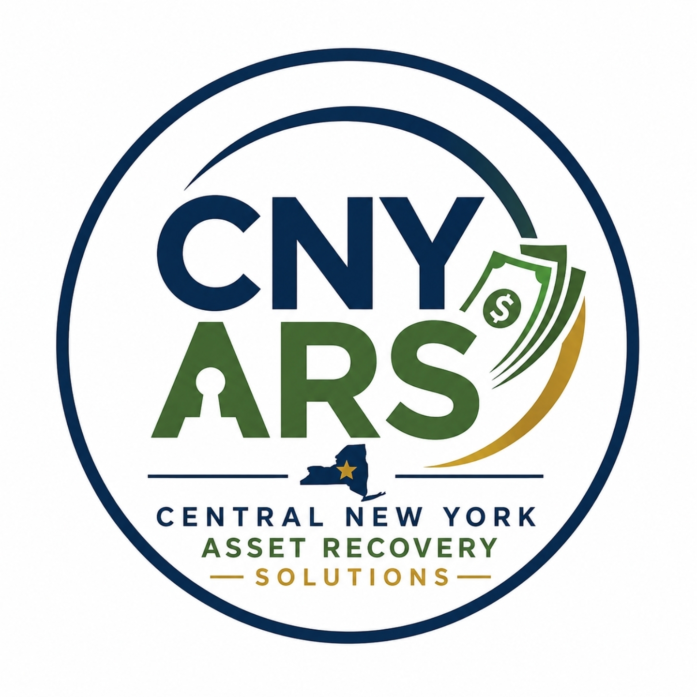

Helping New Yorkers Recover Unclaimed Funds
We help New York residents identify and recover unclaimed money, funds, property, and assets that may already belong to them.
Received a Letter From Us? Search NYS Database YourselfIf you received a letter from Central New York Asset Recovery Solutions, it means we identified a possible unclaimed asset connected to your name through publicly available New York State records.
You are never required to use our services. You may search for and claim unclaimed funds directly through New York State at no cost.
1. We review public unclaimed funds and property records.
2. We contact individuals who may have money waiting.
3. You choose whether to handle the claim yourself or request assistance.
4. If you request our help, we assist with the recovery process.
5. No recovery, no fee.
We believe every New Yorker should know they can search for and claim unclaimed funds directly through the appropriate government agency at no cost. Our service is completely optional and is designed for individuals who would prefer assistance navigating the process.
Central New York Asset Recovery Solutions was founded to help people reconnect with money and assets that are rightfully theirs.
Our mission is simple: provide honest, professional, and transparent assistance to New Yorkers who may have unclaimed money waiting to be recovered.